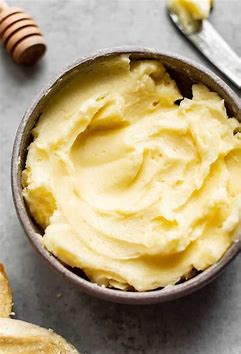

How to make the tastiest honey butter

Description
Elevate your honey butter game by incorporating the delightful flavors of raspberries or strawberries. This recipe offers a scrumptious twist to the classic honey butter, making it an ideal accompaniment for your light and airy popovers. The addition of raspberry or strawberry lends a fruity essence that will tantalize your taste buds and take your popovers to new heights of deliciousness.
Ingredients
- 1/2 cup unsalted butter, softened
- 2 tablespoons honey
- Optional: 1/4 cup fresh raspberries or strawberries (or 2 tablespoons raspberry or strawberry jam)
Instructions
- Begin by placing the softened butter in a mixing bowl. Allow the butter to reach room temperature, ensuring it's easy to work with.
- Using a fork or a handheld mixer, beat the butter until it turns creamy and smooth.
- Optional: If you prefer to infuse your honey butter with the vibrant flavors of raspberries or strawberries, you have two choices. Firstly, if you're using fresh raspberries or strawberries, rinse them thoroughly and pat them dry. Remove any stems or leaves. Secondly, if you have raspberry or strawberry jam, skip to step 5.
- For fresh raspberries or strawberries, mash them using a fork or blend them in a food processor until you achieve a smooth puree.
- Now, add the honey and the raspberry or strawberry puree (or jam, if using) to the bowl with the butter.
- Mix all the ingredients together until well combined. Continue beating until the mixture develops a light and fluffy consistency.
- At this stage, taste the honey butter and adjust the sweetness to your liking. You can add more honey if desired.
- Transfer the raspberry or strawberry-infused honey butter to a serving dish or shape it into a log using plastic wrap for a more elegant presentation. If you prefer, you can refrigerate the butter log for later use.
- Serve the raspberry or strawberry honey butter alongside warm popovers. Allow the butter to slightly soften at room temperature before spreading it on the popovers. The delightful fruity twist of raspberries or strawberries in the honey butter will enhance the overall flavor experience of your popovers.
- Any leftover raspberry or strawberry honey butter can be stored in an airtight container in the refrigerator. Ensure you let it return to room temperature before serving.
Enjoy your honey butter with our warm popovers